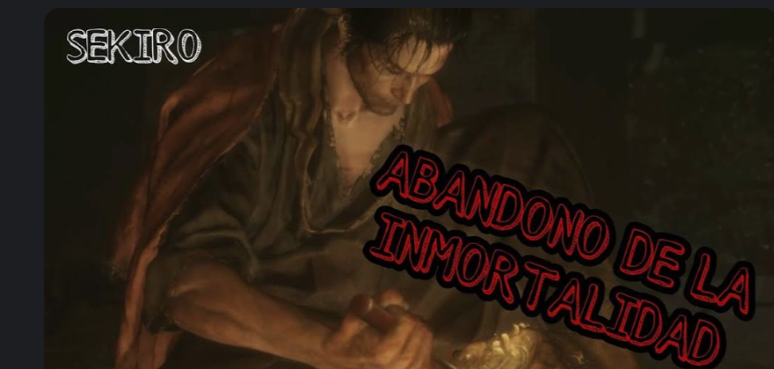

ABANDONO DE LA INMORTALIDAD
Este desenlace se consigue al rechazar la propuesta del Búho y mantenerse leal a Kuro durante el Retorno al Castillo Ashina. Para completarlo, Lobo debe continuar obedeciendo a su joven amo y reunir los elementos necesarios para llevar a cabo el ritual [51][52].
Después de derrotar al Dragón Divino, Lobo entrega a Kuro las Lágrimas del Dragón Divino. El niño sacrifica su vida para poner fin al poder de la Herencia del Dragón. Tras cumplir su misión, Lobo regresa al templo dilapidado y ocupa el lugar del Escultor, dedicándose a tallar estatuas de Buda. Aunque ha cumplido su propósito, deberá contener la ira que todavía habita en su interior [51][52].
